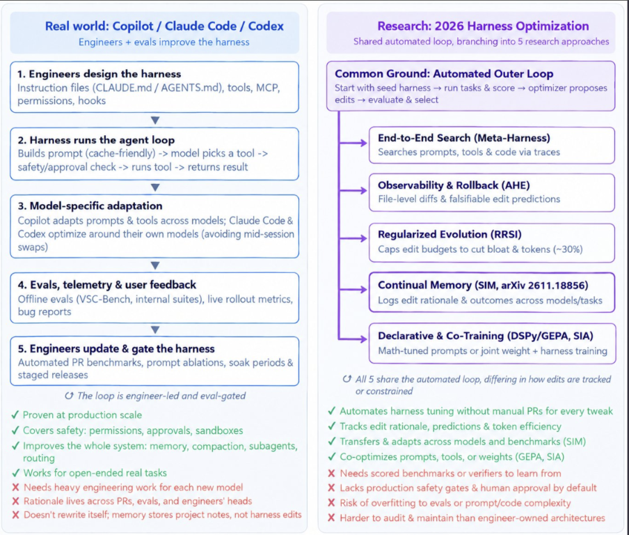

(Copilot, Claude Code, Codex vs. Latest Harness Research)

VS Code GitHub Copilot
Design: Engineers craft the shared Copilot SDK harness—prompts from rules, workspace, history, and memory; tools (replace_string_in_file vs. apply_patch) set per model; MCP, extensions, and .agent.md controls in an Agent Host. Automated: Copilot Fusion picks models, assisted permissions risk-score tool calls, and the runtime enforces sandbox policy.
How it improves: Engineers decide changes with model providers and user feedback. Automated: VSC-Bench and a smoke test (50k+ runs, 30 models) catch regressions; staged rollouts stream telemetry—14.2% fewer tokens, 9.6% lower cost vs. the Local harness.
Claude Code
Design: Engineers built a minimal bash + text-editor loop with edit, approval, and UI tools, CLAUDE.md memory, and subagents. Automated: compaction, auto memory, and auto mode—classifiers and internal cook books and close-end pipelines reviewing each action plus a prompt-injection probe.
How it improves: Engineers strip stale scaffolding as models advance. Automated: internal evals and an incident log—but both missed 3 spring 2026 regressions (lower default effort, a thinking-clearing bug, a verbosity prompt); engineers traced user reports and fixed all 3 by April 20.
Codex
Design: Engineers built the open-source Codex core (loop, threads, sandboxed tools/MCP) and a JSON-RPC App Server powering CLI, IDE, web, and macOS. Automated: compaction, retained reasoning, and sandbox/approval policy.
How it improves: Engineers tune default prompts and apply_patch (V4A diffs) by hand. Automated: internal evals score accuracy, tool use, and bias to action; retained reasoning + compaction lifted GPT-5.6 Sol on ARC-AGI-3 from 13.3% → 38.3% with ~6× fewer tokens. Third parties report Codex models are post-trained on this loop.
Where Harness Research Is Heading (2026 Frontier)
Instead of human-led PRs, recent research automates harness evolution across 5 main tracks:
- End-to-End Harness Search (Meta-Harness): LLMs search over prompts, tools, and execution code using rollout traces—matching hand-built harnesses.
- Observability-Driven Evolution (AHE): Tracks file-level diffs, distilled traces, and falsifiable predictions per edit for safe rollback.
- Regularized Evolution (RRSI): Caps edit budgets to prevent prompt bloat and cut policy tokens (~30% fewer).
- Continual Memory (SIM, Google, arXiv:2611.18856v1): Gives the optimizer a changelog of edit rationale and test outcomes so harnesses adapt across new models or datasets.
- Declarative & Co-Training (DSPy/GEPA, SIA): Optimizes prompts mathematically or post-trains model weights jointly with the harness.
Takeaway: Production agents prioritize reliability, safety, and eval-gated PRs; research explores how to automate and remember those improvements. Ultimately self-improvement will automate many of it as AI can optimize anything.